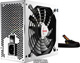
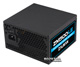
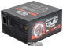

Блок живлення — вторинне джерело живлення, призначене для забезпечення живлення електроприладу електричною енергією, при відповідності вимогам її параметрів: напруги, струму, і т. д. шляхом перетворення енергії інших джерел живлення. У побуті, найчастіше, блок живлення перетворює змінну напругу величиною 220 В і частотою 50 Гц (в Україні та багатьох інших країнах, саме таку напругу і частоту має побутова електромережа), в задану постійну напругу.
- 
Aerocool Imperator 1150W (EN53969)
Характеристики - 
Zalman ZM500-LE 500W
Характеристики - 
Zalman ZM1000-GVM 1000W
Характеристики